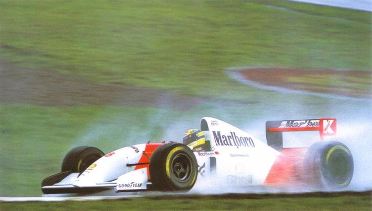

Ayrton Senna: O Mito da Fórmula 1
Ayrton Senna, nascido em 21 de março de 1960 em São Paulo, Brasil, é considerado um dos maiores pilotos de Fórmula 1 de todos os tempos. Sua paixão pelo automobilismo, combinada com um talento excepcional, o levou a conquistar o mundo das corridas e a deixar um legado duradouro.